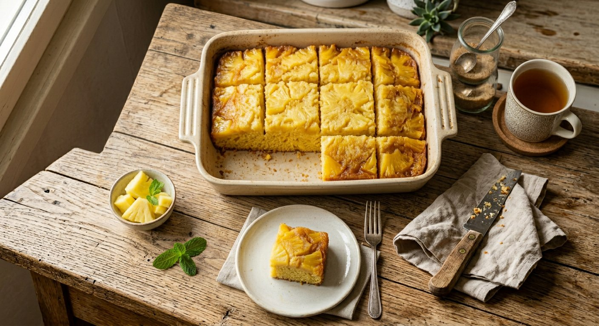

Saftig & mjuk med ananasbitar, socker + honung. 12 bitar, ~176 kcal/bit, ~32 kr.
Clatronic BBA 3774 COSORI CAF-TF101S (Dual Blaze TwinFry)

| Ingrediens | Mängd | Kostnad |
|---|---|---|
| Ananas fryst (hackad) | 200 g | 12,08 kr |
| Turkisk yoghurt 10% | 120 g | 3,96 kr |
| Ägg | 110 g | 3,96 kr |
| Margarin Mat & Bak (rumsvarmt) | 70 g | 2,09 kr |
| Strösocker | 50 g | 0,57 kr |
| Honung flytande | 25 g | 1,89 kr |
| Vetemjöl (Garant) | 200 g | 1,51 kr |
| Majsmjöl (Favero) | 40 g | 0,64 kr |
| Whey-80 / proteinpulver | 20 g | 5,50 kr |
| Bikarbonat | 3 g | 0,12 kr |
| Totalt | ~838 g | 32,32 kr |
| Per bit (~70 g, 12 st) | |
|---|---|
| Kcal | ~176 |
| Protein | ~4,9 g |
| Kolhydrat | ~23,6 g |
| Fett | ~7,1 g |
| Fiber | ~0,9 g |
| Kostnad | ~2,69 kr |